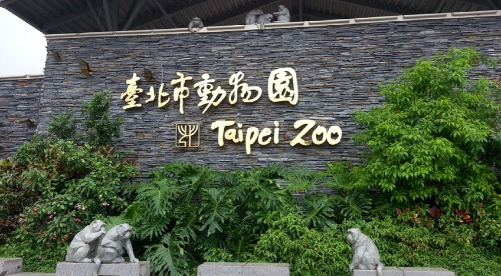
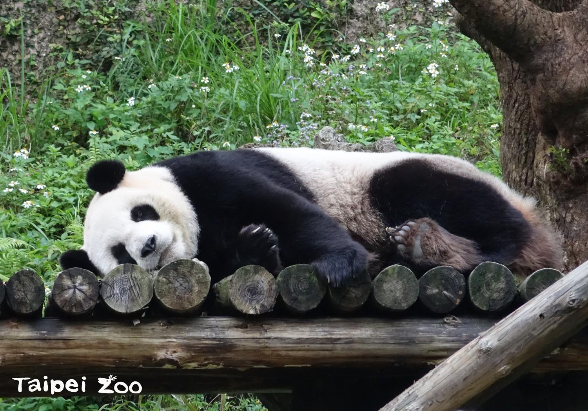
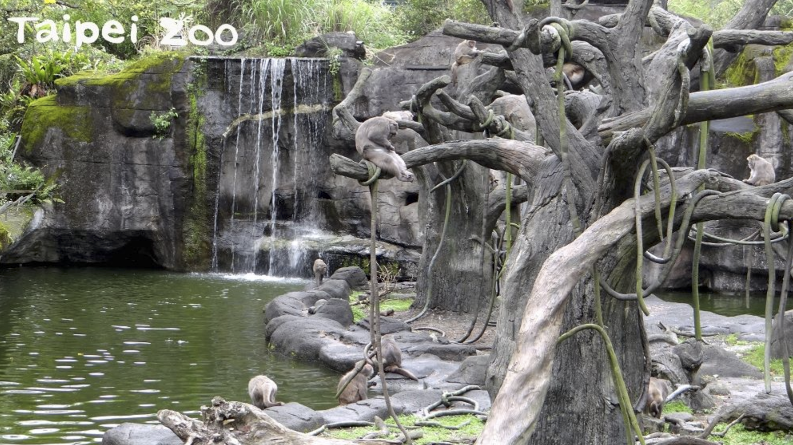
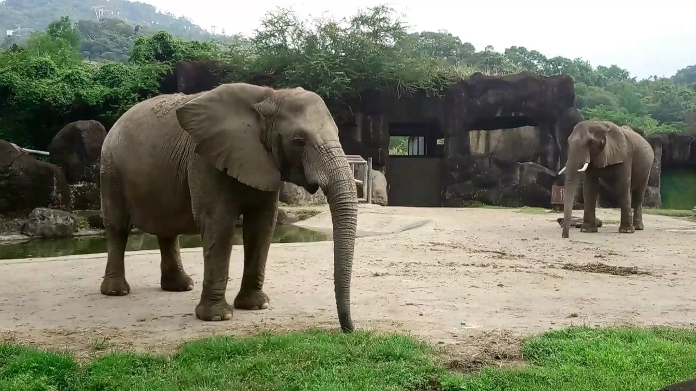

台北-台北市立動物園




臺北市立動物園歷史悠久，是臺灣唯一有百年歷史的動物園，不但是社會大眾體驗自然、認識野生動物的好去處，
更是陪伴許多臺北市民成長的重要記憶。無論您是否曾經在這裡經歷校外踏青、牽手約會，還是親子共遊，
在建園一百週年的歡樂時刻，動物園的工作同仁和動物朋友們歡迎大家蒞臨臺北動物園，發掘不一樣的感動！
交通方式
遊客列車 列車總站 (16:30末班車)←→鳥園站 (17:00末班車)
貓纜接駁巴士 鳥園站 (16:40末班車)←→貓纜動物園南站 (16:00末班車)
※ 備註：
1. 貓空纜車相關公告及旅遊資訊敬請參考捷運公司「貓空纜車網站」
2. 往返「列車總站」與「貓纜動物園南站」，可於「鳥園車站」轉乘 (請依引導路線轉乘，無需出站)
3.貓纜動物園南站遇貓空纜車例行保養維護日或停駛時未提供服務
交通方式
遊客列車 列車總站 (16:30末班車)←→鳥園站 (17:00末班車)
貓纜接駁巴士 鳥園站 (16:40末班車)←→貓纜動物園南站 (16:00末班車)
※ 備註：
1. 貓空纜車相關公告及旅遊資訊敬請參考捷運公司「貓空纜車網站」
2. 往返「列車總站」與「貓纜動物園南站」，可於「鳥園車站」轉乘 (請依引導路線轉乘，無需出站)
3.貓纜動物園南站遇貓空纜車例行保養維護日或停駛時未提供服務
地點:台北市立動物園
地址:台北市文山區新光路二段30號
相關連結:https://www.zoo.gov.taipei/Default.aspx
地址:台北市文山區新光路二段30號
相關連結:https://www.zoo.gov.taipei/Default.aspx